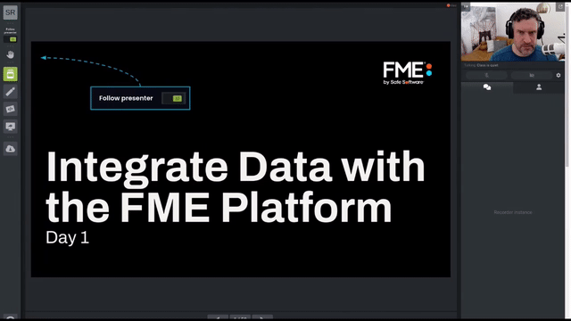
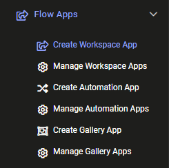
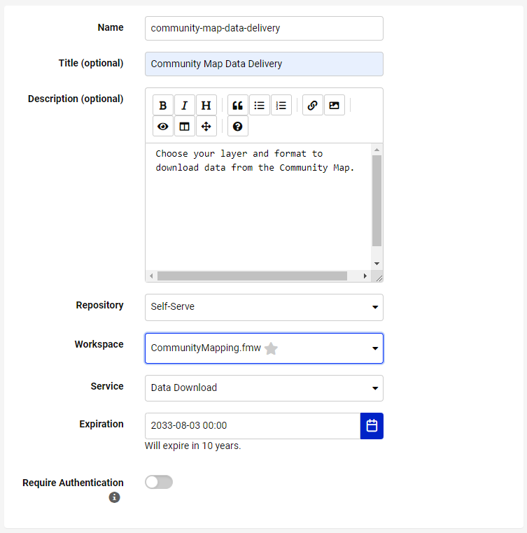
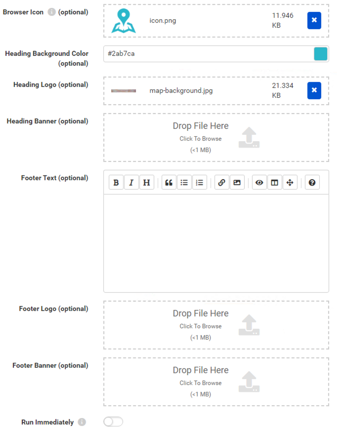
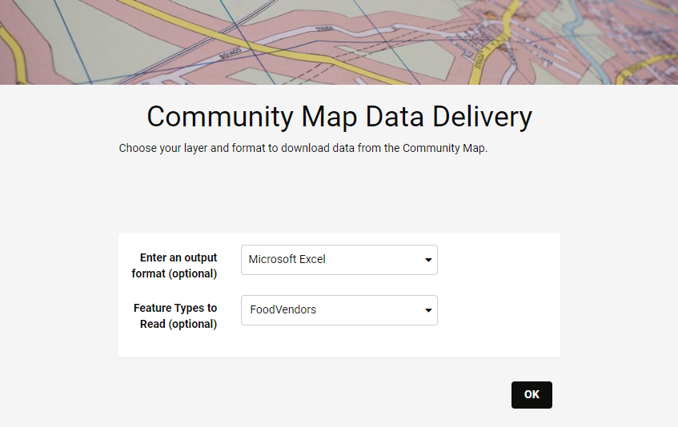

View an example FME Flow workspace app for self-serve data distribution.
After completing this lesson, you’ll be able to:

The word about self-serve data access spreads around Fatima, Frank, and Jennifer’s municipality. Frank is getting more and more users interested in accessing his self-serve workflows. However, not every municipality member—and certainly not the public—has FME Flow logins. As the FME Flow administrator, Frank faces the overhead of managing growing user accounts or finding a way to provide users access to FME Flow without creating accounts.
Thankfully, he knows he can use Flow Apps. Apps let you create custom web pages to provide a self-serve portal, allowing the user to upload data to be transformed by your workflow or to download data created as the output of a workflow. An FME Flow login is not required to access an FME Flow app. Sharing data and increasing accessibility is easy with FME Flow apps.
There are three kinds of Flow apps:
View an example FME Flow workspace app for self-serve data distribution.
Frank wants to convert his self-serve workspace into a Flow workspace app. To do this, he logs into FME Flow (2025.0 or later) and clicks Flow Apps > Create Workspace App.

He fills out the form like this:

After selecting a workspace, the Parameters section appears below. This section lets you pick which published parameters you want users to fill out. Frank wants users to fill them out, so he skips this section.
He also chooses to customize his app to fit his organization’s branding. He clicks the right-pointing arrow to the right of Customize to expand that section.
He fills this section out like this:

If you want to use the same Heading Logo and Icon as Frank, please use these links: map-background.jpg (C:\FMEData\Resources\IntegrateDataWithTheFMEPlatform\map-background.jpg) and icon.png (C:\FMEData\Resources\IntegrateDataWithTheFMEPlatform\icon.png). These images help customize your app.
With the page filled out, Frank clicks OK. A new page appears, confirming that FME Flow created his app. He can share the URL with anyone wishing to access the community map data. With a customized header and icon, users won’t need to know they are interacting with FME Flow! They can follow the link, complete the form, and receive their data.
Frank sends the URL to Fatima to test. She clicks the link and fills out the form to download the FoodVendors data in an Excel spreadsheet.

It works great! She can even send this link to her colleagues in the Business License Office, who can now get up-to-date versions of the data on-demand without having to bother Fatima or log into FME Flow. Everyone saves time using the FME platform.
This example is just a tiny slice of what FME Flow can do. Combining Automations, Apps, Streams, and more means you can create complex and tailored integrations for your organization. Because most modern web platforms provide webhooks or API endpoints, you can connect to almost anything using FME Flow.
Share your App with a colleague. If you use a locally hosted FME Flow, your App will run on your machine's IP and might not be accessible to someone else if you decide to share the URL, depending on your network setup.